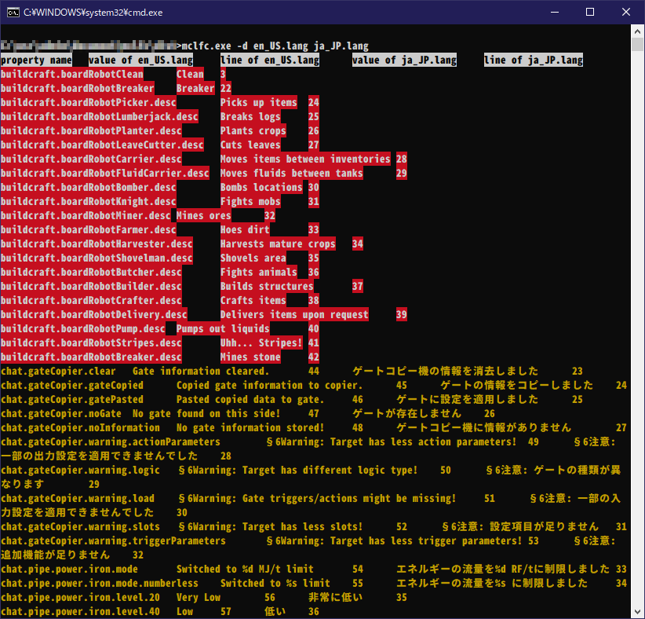

概要
Minecraftの言語ファイルの言語間の比較を行います。
バージョン2.1現在、mclfcはコマンドラインツールであり、GUIは備わっていません。
コマンドプロンプトやパワーシェル等を用いて実行してください。
使用方法
mclfc [options] <original> <translated>
Options
-V,--versionmclfcのバージョンを出力します-o <path>,--output <path>比較結果のファイルを、指定したファイルパスに保存します。拡張子に関わらず出力形式はTSV(タブ区切りデータ)です。-d,--differences行の違う、或いは両ファイルのどちらかに未掲載の翻訳キーのエントリのみを出力します。-u,--untranslated元ファイルに存在し、翻訳ファイルに存在しない翻訳キーのエントリのみを出力します。-h,--help使用方法を表示します。
ダウンロード
Githubのリリースページ
例: Buildcraft 7.99.20での英語-日本語言語ファイルの比較